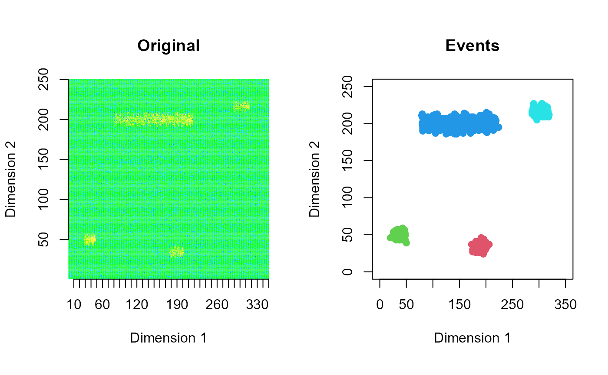

get_features.RdThis function computes event features of 2D events.
get_features(dat.xyz, res.cluster, normal.stats.splines, win_size = 200, tt = 10)
| dat.xyz | The data in a cluster friendly format. The first two columns have |
|---|---|
| res.cluster | Cluster details from |
| normal.stats.splines | The background statistics, output from |
| win_size | The window length of the moving window model, default is set to |
| tt | Related to event ages. For example if |
An Nx22x4 array is returned for 2D data streams and an Nx13x4 array for 3D data streams. Here N is the total number of events extracted from all windows. The second dimension has m features and the class label for the supervised setting. The third dimension has 4 different event ages : tt, 2tt, 3tt, 4tt.
For example, the element at [10,6,3] has the 6th feature, of the 10th extracted event when the age of the event is 3tt. The features for 2D streams are listed below. For 3D streams the features cluster_id, pixels, length, width, height, total_value, l2w_ratio, centroid_x, centroid_y, centroid_z, mean, std_dev and sd_from_global_mean are computed.
cluster_idAn identification number for each event.
pixelsThe number of pixels of each event.
lengthThe length of the event.
widthThe width of the event.
total_valueThe total value of the pixels.
l2w_ratioLength to width ratio of event.
centroid_xx coordinate of event centroid.
centroid_yy coordinate of event centroid.
meanMean value of event pixels.
std_devStandard deviation of event pixels.
avg_slopeThe slope of an lm object fitted to the event pixels.
quad_1The linear coefficient of a second order polynomial fitted to event pixels using lm.
quad_2The quadratic coefficient of a second order polynomial fitted to event pixels using lm.
2sd_from_meanThe proportion of event pixels/cells that has values greater than 2 global standard deviations from the global mean of the window.
3sd_from_meanThe proportion of event pixels/cells that has values greater than 3 global standard deviations from the global mean of the window.
4sd_from_meanThe proportion of event pixels/cells that has values greater than 4 global standard deviations from the global mean of the window.
5iqr_from_medianA small portion of each window and its column medians and column IQRs are used to construct two smoothing splines: a median spline and an IQR spline. The value of the median smoothing spline at each event centroid is used as the local median for that event. Similarly, the value of the IQR smoothing spline at each event centroid is used as the local IQR for that event. This feature gives the proportion of event pixels/cells that has values greater than 5 local IQRs from the local median.
6iqr_from_medianThe proportion of event pixels/cells that has values greater than 6 local IQRs from the local median computed using splines.
7iqr_from_medianThe proportion of event pixels/cells that has values greater than 7 local IQRs from the local median computed using splines.
8iqr_from_medianThe proportion of event pixels/cells that has values greater than 8 local IQRs from the local median computed using splines.
iqr_from_medianLet us denote the 75th percentile of the event pixels value by x. How many local IQRs is x is away from the local median? Both local IQR and local median are computed using splines. That value is given by this feature.
sd_from_meanLet us denote the 80th percentile of the event pixels value by x. How many global standard deviations is x is away from the global mean? Here both global values are computed from window data.
